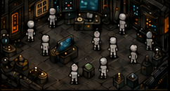
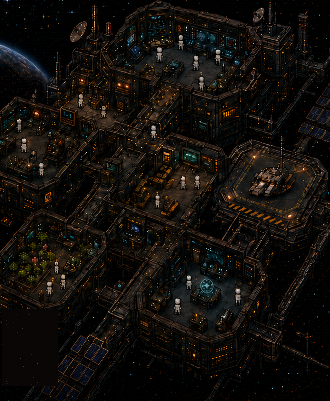
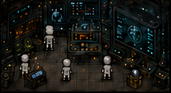
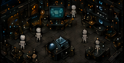
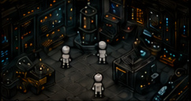

REAL AGENTS. REAL WORK.
Deploy specialized agents that use real tools and connectors. They adapt, collaborate, and get real work done — with or without you.
Give your AI a world to work in.
Recruit AI agents into a living pixel-art station on your machine, connect real tools and real models, and watch your workforce think, build, research, and solve — for your goals.
StarNet's product contract is literal. The station is not decoration — it is the harness, rendered.
Start with one agent. Place bays or summon specialists to run more, concurrently — each one a genuinely distinct, bounded agent run. Real model calls, real tools, real cost. Never an animation of work; always the work itself.


Deploy specialized agents that use real tools and connectors. They adapt, collaborate, and get real work done — with or without you.

Files, browsers, APIs, MCP connectors, skills. Your agents use real capabilities on your machine — not simulations of them.
Everything happens in plain sight inside your station. The world only ever renders what the harness can prove — if the station shows an agent working, it is working.
Runs on your machine. Station state, transcripts, memory, and ledgers stay in your local workspace. Bring your own OpenRouter key or sign in to a supported provider — your keys, your data, your infrastructure.

Set goals, define the leash, and step away. Night Shift keeps your station working while you're gone — and reports back honestly on what it actually did.

It looks like a game. It feels alive. Underneath, it's a serious multi-agent harness built to get things done.
Most agent dashboards decorate. StarNet's core law is that the app never asserts state the harness can't prove — no fake progress bars, no idle animations pretending to be work, no invented "agents online" counters. If the station shows an agent at a desk mid-run, there is a live model run behind it. That's what makes the window worth glancing at: watching the floor tells you what is actually happening.
> read: the station & truthful telemetryNo YAML, no policy files. Draw a room and you've scoped a team; place a prop and you've granted a tool; cut a doorway and you've authorized a handoff. Capability boundaries you can literally see — and redraw in seconds. Full power from minute one: nothing is gated behind progression, ever.
> read: object = capabilityEvery bay you place can run concurrently — genuinely distinct, bounded agent runs, not one queue in costumes. Pin a different model to each agent (heavy reasoning on the architect, fast-and-cheap on the intern), let teams spawn sub-workers, and watch the conveyor carry real work between rooms.
> read: agents & teamsStep away and the station keeps working — on standing goals, queued work, and ideas worth exploring — strictly inside the leash you set. Away-runs are jailed to a workshop sandbox, and when you return you get an honest digest: what ran, what it made, what it cost, what got declined. Deliverables open in one click.
> read: autonomy & night shiftAlready live in Claude Code, Hermes, or OpenClaw? StarNet doesn't demand a divorce. An MCP stdio bridge and an OpenAI-style ingress endpoint let other tools drive StarNet capabilities — and let your station sit alongside the harnesses you already run, as shared infrastructure instead of another silo.
> read: connectors & interopFive provider families, fourteen built-in tool families, MCP for everything else.
Download the installer for your platform — Windows and macOS are both first-class targets from day one. Early builds aren't yet OS code-signed, so you'll get a one-time warning; the getting-started guide walks you through exactly what you'll see.
Bring your own OpenRouter API key, or use a supported OAuth sign-in. Provider requests leave your machine only when an agent runs; everything else stays local.
Awaken your first crew member, give it work, and watch it move to its desk and do it. Then draw more rooms, grant more tools, and scale up.
git clone https://github.com/nonfungiblefunyuns-ship-it/skynet-harness.git
cd skynet-harness
node sidecar/index.jsWindows and macOS installers are fully supported from day one, and Linux ships from the same signed release train. All builds publish on the releases page and update through the same verified feed. Current version: v0.5.2.
// honesty note: every build is cryptographically signed for auto-updates, but early builds aren't yet OS code-signed (no Authenticode / Apple notarization), so Windows and macOS will each show a one-time "unknown publisher" warning before first run. The getting-started guide shows exactly what to click on each platform. Something broken? Tell us: androo.agi@gmail.com.
The software is MIT-licensed open source and free to run. Model usage costs whatever your provider charges — you bring your own API key (or OAuth account), and StarNet shows you real cost per run. No markup, no subscription required to use your own keys.
Yes — that's the whole point. Every agent run is a real model call with real tools; files get written, browsers get driven, and the ledger records real cost. The station never renders state the harness can't prove. If it looks like an agent is working, it is.
On your machine. Station state, transcripts, memory, and ledgers live in your local StarNet workspace. Requests go to your model provider only when an agent runs, and to the wider network only when you explicitly grant a network tool or connector.
A Windows, macOS, or Linux machine and one model provider: an OpenRouter API key works everywhere, or use a supported OAuth sign-in. That's it — full power from minute one, nothing gated behind progression.
Early builds aren't yet code-signed with a paid OS certificate, so SmartScreen and Gatekeeper flag them as "unknown publisher." The troubleshooting guide documents every warning honestly, including the one Windows 11 Smart App Control case we can't bypass.